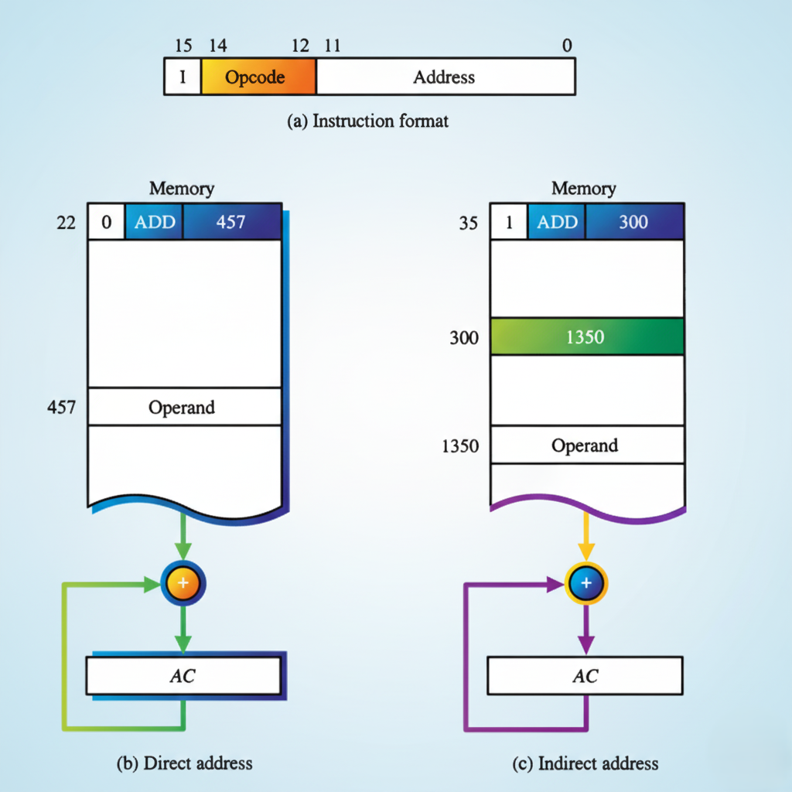

What is Indirect Addressing?
Indirect addressing is a memory addressing method where the instruction specifies an address of an address, not the actual operand itself. When the second part of an instruction specifies the address of an operand, the instruction is said to have a direct address. However, when it specifies the address of an address in memory where the operand is located, this is called indirect address, where the bits in the second part of the instruction refer to the address of a memory word in which the address of the operand can be found.
→
Direct Addressing
📝 Description
In direct addressing mode, the address part of the instruction contains the actual address of the operand in memory. The instruction directly points to the memory location where the data is stored.
💡 Example
Instruction Format:
Opcode: ADD | Address: 457
This instruction means: Add the contents of memory address 457 to the accumulator (AC).
🔄 Visual Process
Instruction
Address: 457
→
Memory[457]
Operand
+
AC
One memory reference to fetch the operand
✅ Key Characteristics
✓ Faster execution - only one memory access
✓ Simple and straightforward
✓ Direct access to operand
• Limited flexibility
↝
Indirect Addressing
📝 Description
In indirect addressing mode, the address field of the instruction gives the address where the effective address is stored. The control unit needs two memory references: first to read the address of the operand, and second to read the operand itself.
💡 Example
Instruction Format:
Opcode: I ADD | Address: 300
The 'I' bit = 1 indicates indirect addressing. Address 300 contains 1350, which is the actual address of the operand.
Step 1: Read Memory[300] → Get address 1350
Step 2: Read Memory[1350] → Get the operand
🔄 Visual Process
Instruction
Address: 300
→
Memory[300]
Value: 1350
→
Memory[1350]
Operand
+
AC
Two memory references to fetch the operand
✅ Key Characteristics
✓ Greater flexibility - can use pointers
✓ Useful for arrays and data structures
✓ Enables dynamic addressing
• Slower - requires two memory accesses
• More complex execution
Demostration of → direct and ↝indirect address

🎯 Key Difference Summary
1. Direct Addressing (b): The instruction's address field (e.g., 457) directly points to the memory location containing the operand.
2. One Memory Access (b): After fetching the instruction, only one additional memory access is needed to retrieve the operand.
3. Indirect Addressing (c): The instruction's address field (e.g., 300) points to a memory location that holds the actual address (e.g., 1350) of the operand.
4. Two Memory Accesses (c): After fetching the instruction, two additional memory accesses are required: one to get the operand's address and a second to get the operand itself.
5. Address Lookup: Direct mode uses the address field as the final operand location, while indirect mode uses it for an intermediate address lookup.